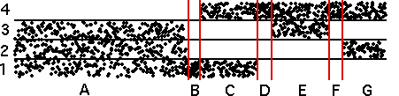
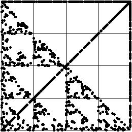

| 1(c) Note the time series breaks into seven distinct regimes, indicated by the vertical lines. |
|  |
| In region A the time series points are scatterd throughout bins 1, 2, and 3. These produce driven IFS points lying on the gasket with corners 1, 2, and 3. |
| In region B the time series points lie in bin 1. These produce driven IFS points converging rapidly to corner 1. |
| In region C the time series points are scattered throughout bins 1 and 4. These produce driven IFS points lying along the line between corners 1 and 4. |
| In region D the time series points lie in bin 4. These produce driven IFS points converging rapidly to corner 4. |
| In region E the time series points are scattered throughout bins 3 and 4. These produce driven IFS points lying along the line between corners 3 and 4. |
| In region F the time series points lie in bin 4. These produce driven IFS points converging rapidly to corner 4. |
| In region G the time series points are scattered throughout bins 2 and 4. These produce driven IFS points lying along the line between corners 2 and 4. |
|  |
Return to Homework 3 Practice.